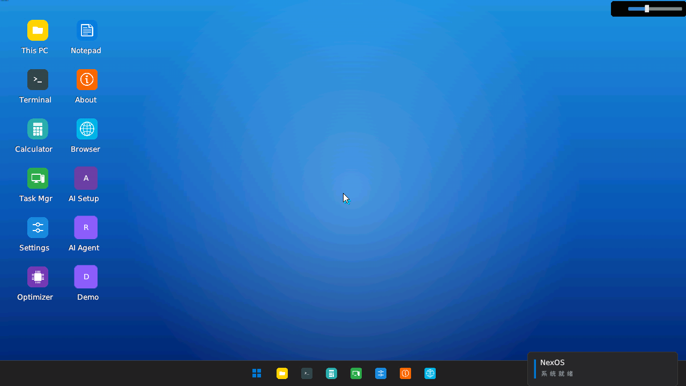
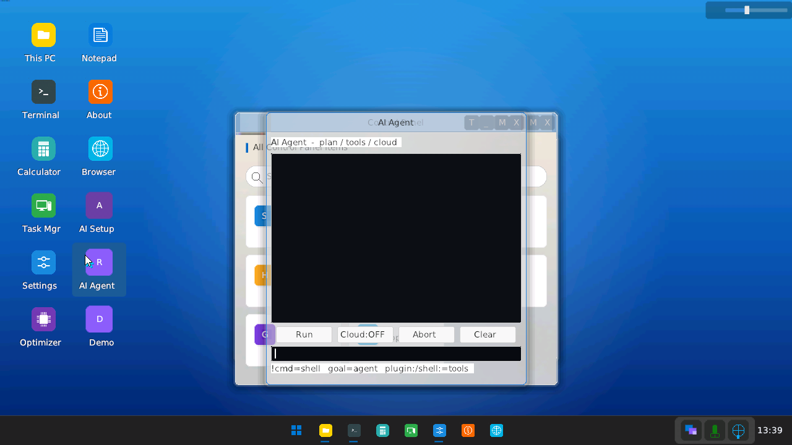
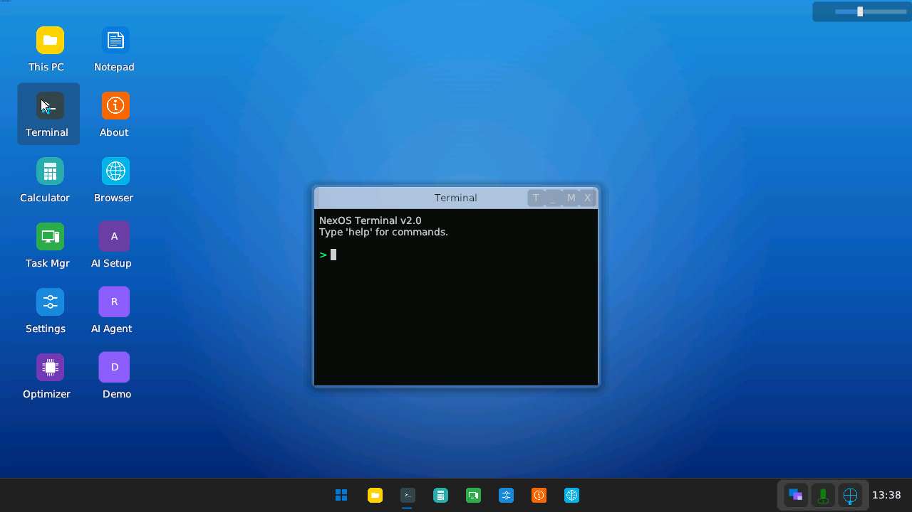
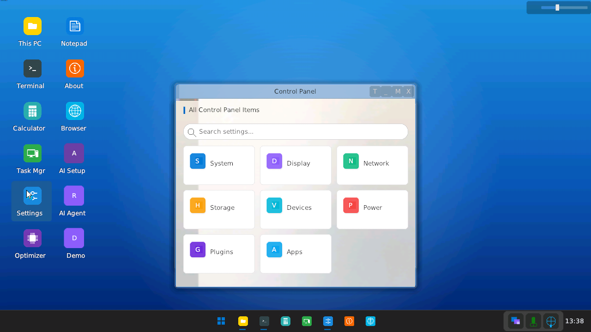
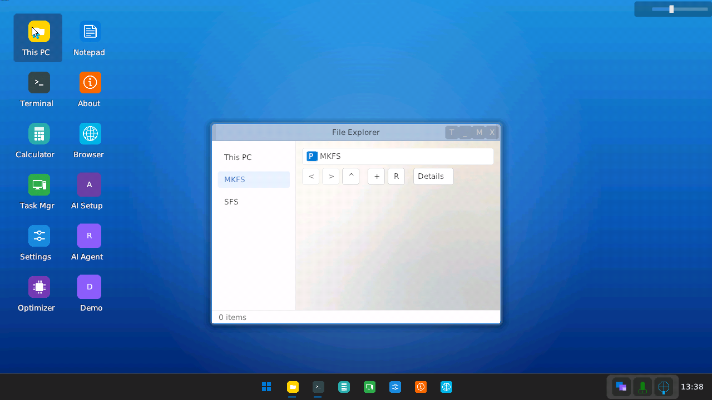
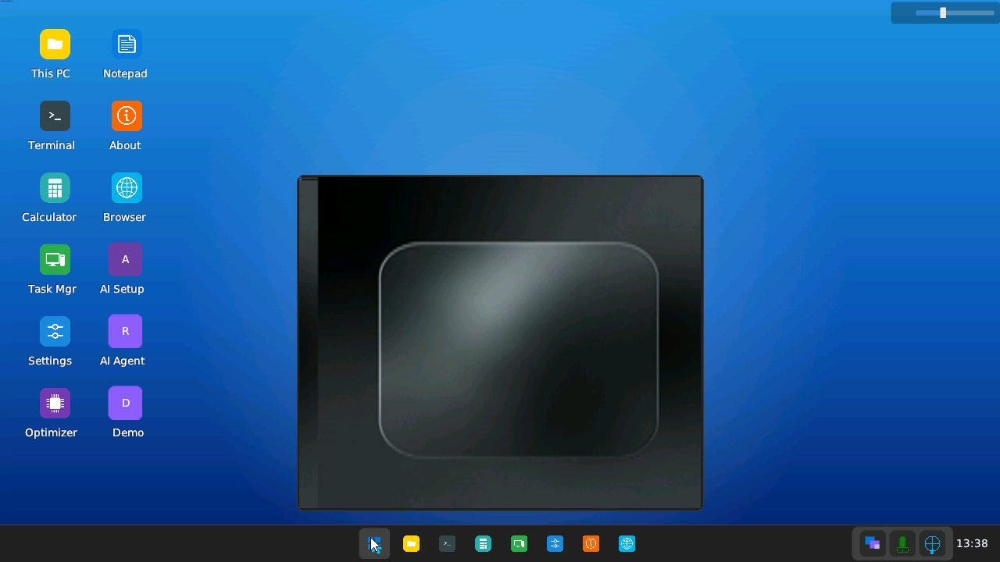

自己写内核、自己画桌面、自己跑 AI。
一个从 0x7C00 开始的完整操作系统 —— C++ 内核 + C# 托管桌面壳 +
帧缓冲图形 + 自主 Agent + 分布式算力网络。
不是模拟器，不是 Linux 发行版 —— 一个真正从引导扇区写起的 x86 操作系统。
NexOS 的全部代码从第一行 0x7C00 引导汇编开始，到 C++ 内核、C# 托管桌面壳、帧缓冲渲染器、文件系统、TCP/IP 协议栈，再到自研的 MiniCLR 运行时与 AI 推理引擎，全部自行实现。它能在真实硬件与 QEMU / VMware / VirtualBox 上启动，跑出自己的图形桌面，并让云端大模型 在里面真的动手干活。
Stage1 → Stage2 二阶引导，BIOS 与 UEFI 双路径汇合到同一 C++ 入口；32 位保护模式与 64 位长模式两套内核，长模式带完整页表与 SMP 初始化。
boot.asm · entry.asm · linker.ldVBE 2.0 / BGA / UEFI GOP 三条帧缓冲路径，1280×720 BGRX32 直接自绘：渐变壁纸、实时模糊玻璃、抗锯齿字形、窗口合成器与动画层。
gui.cpp · 11,327 行自研 C# 运行时：字节码加载、JIT 执行、GC 堆、内部调用（icall）绑定。桌面壳的 11,894 行 C# 全部跑在它上面，编译为 shell.mex 打包进 SFS。
clr.cpp · csharp/接入云端 DeepSeek，ReAct 式规划后在真实系统里执行：mkfs、写文件、读回验证，输出流式打进终端窗口。密钥经宿主代理，全程不落屏。
ai_engine.cpp · agentdistnet / dcn：UDP 节点发现、任务分片、跨节点合并执行。自研 Transformer 推理引擎本地跑 GGUF 模型，多机协同做更大规模推理。
distnet · gguf_infer自研 PE/Win32 子系统可直接运行 Windows 程序，Linux ELF 兼容层，Mono/.NET 运行时移植，另有多用户登录、sudo 权限与 Y/N 确认引擎。
win32.cpp · linux_compat从裸机到 Shell，每一层都可以单独剥掉 —— 每一层都是自己写的。
| 子系统 | 实现 | 要点 |
|---|---|---|
| 引导 | boot.asm / entry.asm | BIOS + UEFI 双引导，FAT 与 ext 分区，handoff 结构传参 |
| 内存 | kernel.cpp | 位图 PMM、x86 分页页表、内核堆（10.3 MiB）、块对齐与合并 |
| 图形 | gui.cpp | VBE / BGA / GOP，1280×720 BGRX32，玻璃模糊与窗口合成 |
| 运行时 | clr.cpp | MiniCLR：698 方法 / 73 类型 / 73 KB 字节码的桌面壳 |
| 文件系统 | vfs.cpp / ntfs.cpp | 可写 MKFS、只读 SFS、NTFS 只读挂载、Linux 独立分区 |
| 网络 | net.cpp / net_virtio.cpp | NE2000 + virtio-net，TCP/IP、HTTP 服务器、DNS 客户端 |
| AI | ai_engine.cpp | GGUF 加载、Transformer 前向推理、流式输出、ReAct Agent |
NexOS 的 AI 不做「聊天窗」。它拿到目标后自己规划、真的调用系统命令、再验证结果 —— 一个闭环。
规划交给云端 DeepSeek，执行落在本地内核。模型出 ReAct 计划，系统一步步跑完 —— 不是让模型输出文本，是让它真的动文件系统。
DeepSeek ReAct · tool bindingAgent 每一步规划、每次工具调用、每条命令输出都实时回显到终端窗口，密钥经宿主代理打码不落屏。可录制、可回放、可演示。
streaming trace · 0x501F 录制权限引擎的 Y/N 提示会在危险命令前拦截，默认拒绝（无应答即 DENY）。fail-safe 而非 fail-open —— Agent 不能悄悄毁掉你的磁盘。
perm.cpp · fail-safe DENY不想联网也能跑：内置 GGUF 加载器与 Transformer 前向推理，支持 64 位流式生成。distnet 还能把分片下发到多节点并行算。
gguf_infer · distnet 分片nexos$ agent run "格式化数据盘，写一个 demo.txt，再读回来" ▸ plan 4 steps · mkfs → fwrite → cat → verify ▸ tool call mkfs ✔ MKFS formatted, 135 KB ▸ tool call fwrite demo.txt ✔ Wrote 11 bytes ▸ tool call cat demo.txt ✔ "hello nexos" ▸ verify read-back matches written data SUMMARY Formatted the data disk, wrote demo.txt, verified it with cat. SUMMARY All requested steps already executed. nexos$
以下全部来自 QEMU 实机运行，1280×720 真实帧缓冲抓取，非渲染图。






不需要交叉工具链，不需要预编译内核 —— 主机上直接编译出可启动镜像。
| 环境 | 要求 | 说明 |
|---|---|---|
| 编译器 | i686-elf-gcc / x86_64-elf-gcc | GNU 工具链，freestanding，无 libc 依赖 |
| 运行时 | .NET SDK + mono | 仅构建托管桌面壳需要，内核本身不依赖 |
| 虚拟化 | QEMU / VMware / VirtualBox | BIOS 与 UEFI 路径均已验证 |
| 输出 | build/os_v2.img | 单文件原始磁盘镜像，直接可启动 |